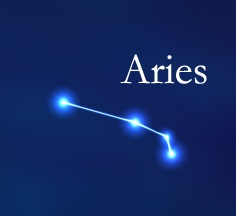
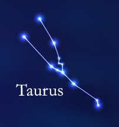
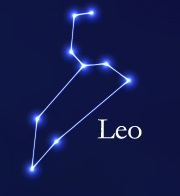
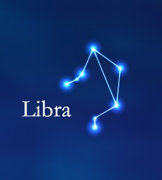
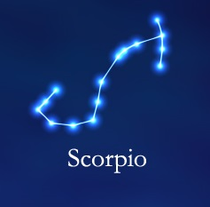
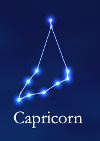
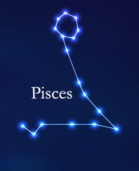

Constellations are named patterns of stars. All societies created them. The classical -- "ancient" -- constellations that populate our sky began in the
lands of the middle east thousands of years ago,their origins largely lost to time. They passed through the hands of the ancient Greeks, who overlaid them with their legends and codified them
in story and verse. During Roman times they were assigned Latin names. The constellations play an important role in modern astronomy. They bring order to the sky by dividing it into smaller segments, providing a base for
naming celestial objects. Though the brighter stars commonly carry "proper names" that come mostly from Arabic, they are also assigned Greek letters and
Arabic numbers to which are affixed the Latin possessive forms of the constellation names, Vega, for example, also known as "Alpha of Lyra," or "Alpha
Lyrae." The IAU also adopted three-letter abbreviations for all the constellations and their possessives, Vega thus becoming Alpha Lyr.The Signs of the Zodiac
and the 12 Zodiacal Constellations
Aries
Aries the Ram is an Autumn constellation, and can be best viewed in the night sky during the month of November.

Taurus
Taurus the Bull is an Autumn constellation, and can be best viewed in the night sky during the month of December.

Gemini
Gemini the Twins is a Winter constellation, and can be best viewed in the night sky during the month of January.
Cancer
Cancer the Crab is a Winter Constellation, and can be best viewed in the night sky during the month of February.
Leo
Leo the Lion is a Winter constellation, and can be best viewed in the night during the month of March.

Virgo
Virgo the Virgin is a Spring constellation, and can be best viewed during the month of April.

Libra
Libra the Scales is a Spring constellation, and can be best viewed in the night sky during the month of May.
Scorpio
Scorpio the Scorpion is a Spring constellation with an astronomical name of Scorpius, and can be best viewed in the night sky during the month of June.

Sagittarius
Sagittarius the Archer is a Summer constellation, and can be best viewed in the night sky during the month July.
Capricorn
Capricorn the Sea Goat is a Summer constellation with an astronomical name of Capricornus, and can be best viewed in the night sky during the month of August.

Aquarius
Aquarius the Water Bearer is an Summer constellation, and can be best viewed in the night sky during the month of September.
Pisces
Pisces the Fishes in an Autumn constellation, and can be best viewed in the night sky during the month of October.
